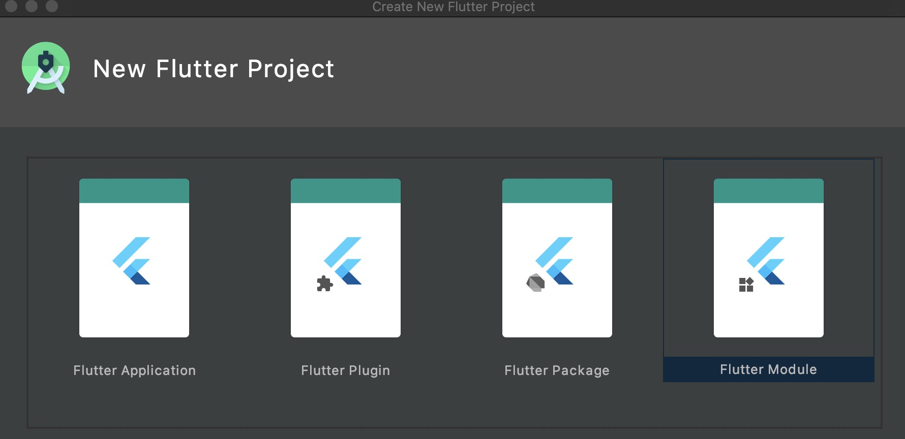

利用maven仓库、cocoaPods将Flutter抽离成sdk，native开发人员无需安装Flutter环境，无感知开发
查看了网上各种方案也包括闲鱼团队的开源flutter_boot ，都各有缺点。鉴于各种方案都需要制定相应的Flutter版本，考虑到Flutter更新速度，于是决定依靠官方的产物集成方式解决混合开发的问题，并进行远程SDK管理。
##Flutter构建模式
你可以在官方DOCS 中看到详细介绍，下文打包命令都会产出对应三种模式的包以便满足各场景需要，我们简单记录下来：
Debug Debug模式下，app可以被安装在物理设备、仿真器或者模拟器上进行调试。
热重载仅能在Debug模式下运行
仿真器、模拟器仅能在Debug模式下运行
Debug模式下，APP性能可能会掉帧或者卡顿
Profile Profile模式下，一些调试能力是被保留的——足够分析你的app性能。在仿真器和模拟器上，Profile模式是不可用的。
Release Release模式对快速启动、快速执行和package的大小进行了优化，并禁用了调试、服务扩展等功能，Release模式做到了最大的优化以及最小的占用空间。
如上三种模式可以通过以下命令运行到设备上：
1 2 3 4 flutter run --release flutter run --profile flutter run --debug
##iOS - 以framework的形式添加到你的既有iOS应用中，并上传CocoaPods
创建Flutter module 你可以在Android Studio中创建

也可以通过命令行
1 flutter create --template module my_flutter
此module并不是Android里的模块或者iOS里的组件，而是Google提供的一种创建模式，可以独立运行。
产物集成 1 flutter build ios-framework --output=somePath/
产物目录结构如下：
1 2 3 4 5 6 7 8 9 10 11 12 13 14 15 16 17 somePath/ └── Flutter/ ├── Debug/ │ ├── Flutter.framework │ ├── App.framework │ ├── FlutterPluginRegistrant.framework (only if you have plugins with iOS platform code) │ └── example_plugin.framework (each plugin is a separate framework) ├── Profile/ │ ├── Flutter.framework │ ├── App.framework │ ├── FlutterPluginRegistrant.framework │ └── example_plugin.framework └── Release/ ├── Flutter.framework ├── App.framework ├── FlutterPluginRegistrant.framework └── example_plugin.framework
Flutter.framework有400M-500M，并且不会经常变动，下文的pod lib处理中我们需要为它单独创建一个pod，剩下的framwork每次新增插件或变更代码都会跟着变动，放在一个pod。
cocoapods+git管理 podfile无法直接引用framework，需要一个pod作为中转。首先我们需要依次进行如下操作：
创建一个名为flutter-plugin-lib私有库
1 pod lib create flutter-plugin-lib
打开flutter-plugin-lib.podspec，在end前加入：
1 2 3 s.ios.vendored_frameworks = 'flutter_frameworks/App.framework' , 'flutter_frameworks/FlutterPluginRegistrant.framework' , 'flutter_frameworks/shared_preferences.framework'
在根目录创建flutter_frameworks文件夹，把刚生成Release的framework除去Flutter.framework cv过来。
创建git仓库并上传到云端。
1 2 3 4 5 6 git init git remote add origin http: git add . git commit -m "xxx" git push -u origin master
在需要混编Flutter的native项目的podfile中添加：
1 pod 'flutter-plugin-lib' , :git => 'http://xxx/flutter-plugin-lib' :tag => 'v1.0.0'
同步cocoapods
Flutter.framework处理方案如上。
至此，完成了引入所有的frameworks，并且不需要组内其他成员在本地安装Flutter SDK和Cocoapods。
验证 AppDelegate.swift
1 2 3 4 5 6 7 8 9 10 11 12 13 14 15 16 import UIKitimport Flutterimport FlutterPluginRegistrant@UIApplicationMain class AppDelegate : FlutterAppDelegate lazy var flutterEngine = FlutterEngine (name: "sup flutter engine" ) override func application (_ application: UIApplication,didFinishLaunchingWithOptions launchOptions: [UIApplication.LaunchOptionsKey: Any ]?) Bool { flutterEngine.run() GeneratedPluginRegistrant .register(with: self .flutterEngine) return super .application(application, didFinishLaunchingWithOptions: launchOptions) } }
ViewController.swift
1 2 3 4 5 6 7 8 9 10 11 12 13 14 15 16 17 18 19 20 import UIKitimport Flutterclass ViewController : UIViewController override func viewDidLoad () super .viewDidLoad() let button = UIButton (type: UIButton .ButtonType .custom) button.addTarget(self , action: #selector(showFlutter), for : .touchUpInside) button.setTitle("Show Flutter!" , for : UIControl .State .normal) button.frame = CGRect (x: 80.0 , y: 200.0 , width: 160.0 , height: 40.0 ) button.backgroundColor = UIColor .blue self .view.addSubview(button) self .view.backgroundColor = UIColor .white } @objc func showFlutter () present(FlutterViewController (engine: (UIApplication .shared.delegate as ! AppDelegate ).flutterEngine, nibName: nil , bundle: nil ),animated: true ,completion: nil ) } }
Android-以aar的形式上传到私有maven/本地依赖 创建Flutter module 你可以在上述iOS所创建的module中继续开发。
产物集成 产物目录结构如下：
1 2 3 4 5 6 7 8 9 10 11 12 13 14 15 16 17 18 19 build/host/outputs/repo └── com └── example └── my_flutter ├── flutter_release │ ├── 1.0 │ │ ├── flutter_release-1.0 .aar │ │ ├── flutter_release-1.0 .aar.md5 │ │ ├── flutter_release-1.0 .aar.sha1 │ │ ├── flutter_release-1.0 .pom │ │ ├── flutter_release-1.0 .pom.md5 │ │ └── flutter_release-1.0 .pom.sha1 │ ├── maven-metadata.xml │ ├── maven-metadata.xml.md5 │ └── maven-metadata.xml.sha1 ├── flutter_profile │ ├── ... └── flutter_debug └── ...
maven管理 你可以按照google DOCS 中描述的方式在本地依赖aar。
1 2 3 4 5 6 7 8 9 10 11 12 13 14 15 16 17 18 19 20 21 android { } repositories { maven { url 'somepath/my_flutter/build/host/outputs/repo' } maven { url 'https://storage.googleapis.com/download.flutter.io' } } dependencies { debugImplementation 'com.example.flutter_module:flutter_debug:1.0' profileImplementation 'com.example.flutter_module:flutter_profile:1.0' releaseImplementation 'com.example.flutter_module:flutter_release:1.0' }
但是这样对native开发组员来说接入成本还是过高，于是我考虑到用maven私服管理的方式处理依赖，当然首先公司应该有服务器，以下基于mac搭建maven仓库：
1 2 3 4 5 brew install nexus nexus start >>http: nexus stop
在flutter module中编写sh脚本处理上传动作：
1 2 3 4 5 6 7 8 9 10 11 12 13 14 15 16 17 18 19 20 21 22 23 24 25 26 27 28 29 30 31 32 33 34 35 36 37 38 39 40 41 42 43 44 45 46 47 48 49 50 51 52 53 54 55 56 57 58 59 60 61 62 63 64 65 66 67 68 69 70 71 72 73 #!/bin/bash flutter clean flutter build aar aars=() poms=() targetPath="build/host/outputs/repo" function findAarPom echo "查找此目录是否有aar及pom：$1 " targetDir=`ls $1 ` for fileName in $targetDir do if [[ -d $1 "/" $fileName ]]; then findAarPom $1 "/" $fileName else if [[ ${fileName:0-4} == '.aar' ]]; then aars[${#aars[@]} ]=$1 "/" $fileName elif [[ ${fileName:0-4} == '.pom' ]]; then poms[${#poms[@]} ]=$1 "/" $fileName fi fi done } findAarPom $targetPath echo "============" echo "aar有：《共${#aars[@]} 个》" echo "${aars[@]} " echo "pom有：《共${#poms[@]} 个》" echo "${poms[@]} " echo "============" if [[ ${#aars[@]} -ne ${#poms[@]} ]]; then echo "-- !!! pom文件与aar不对称，请检查aar打包配置，上传任务 退出 !!! --" exit 1 fi if [[ ${#aars[@]} == 0 ]]; then echo "-- !!! 未找到aar文件，请检查aar打包配置，上传任务 退出 !!! --" exit 1 fi function upload echo "开始上传：" echo $1 echo $2 mvn deploy:deploy-file \ -DpomFile="$1 " \ -DgeneratePom=false \ -Dfile="$2 " \ -Durl="http://localhost:8081/nexus/content/repositories/releases" \ -DrepositoryId="nexus" \ -Dpackaging=aar \ -s="mvn-settings.xml" } for (( i=0;i<${#aars[@]} ;i++ )); do echo "正在处理第$[$i +1]个，共${#aars[@]} 个" upload "${poms[$i]} " "${aars[$i]} " done
其中mvn-settings.xml是单独对当前项目配置mvn，修改admin password为maven的账号密码，默认为admin/admin123
在Android项目app模块中的build.gradle
1 2 3 4 5 6 7 8 9 10 11 12 13 14 15 16 17 18 19 20 21 22 23 24 25 26 27 28 29 30 31 android { buildTypes { ... profile { initWith debug } } compileOptions { sourceCompatibility JavaVersion.VERSION_1_8 targetCompatibility JavaVersion.VERSION_1_8 } } repositories { maven { url 'http://localhost:8081/nexus/content/repositories/releases' } maven { url 'https://storage.googleapis.com/download.flutter.io' } } dependencies { debugImplementation 'com.example.flutter_module:flutter_debug:1.0' profileImplementation 'com.example.flutter_module:flutter_profile:1.0' releaseImplementation 'com.example.flutter_module:flutter_release:1.0' }
如此即可完成maven私服上传，如果你有服务器可以修改ip地址完成上传、依赖。由于我司没有私服，于是决定把host/文件夹拖入项目的方式实现依赖：
根目录build.gradle:
1 2 3 4 5 6 7 8 9 10 11 12 13 14 15 16 buildscript { ... repositories { ... maven { url '../host/outputs/repo' } maven { url 'https://storage.flutter-io.cn/download.flutter.io' } } } allprojects { repositories { ... maven { url '../host/outputs/repo' } maven { url 'https://storage.flutter-io.cn/download.flutter.io' } } }
至此，完成了引入所有的aar，并且不需要组内其他成员在本地安装Flutter SDK。网上也有通过fat-aar来合并aar包进行依赖处理的方法，我认为对于迭代频繁的新技术应该尽量用官方推荐的方式去实现，以免之后的迭代、版本升级带来不必要的开发成本。
验证 App.kt
1 2 3 4 5 6 7 class App : Application override fun onCreate () super .onCreate() FlutterMain.startInitialization(this ) } }
FlutterActivity.kt
1 2 3 4 5 6 7 8 9 10 11 12 13 14 15 16 17 18 19 20 21 22 23 24 25 26 27 28 29 30 31 32 class FlutterActivity : FlutterFragmentActivity var engine:FlutterEngine? = null override fun onCreate (savedInstanceState: Bundle ?) super .onCreate(savedInstanceState) engine = FlutterEngine(this ) engine?.dartExecutor?.executeDartEntrypoint(DartExecutor.DartEntrypoint.createDefault()) setContentView(R.layout.activity_flutter) fv_container.attachToFlutterEngine(engine!!) } override fun onResume () super .onResume() engine?.lifecycleChannel?.appIsResumed() } override fun onPause () super .onPause() engine?.lifecycleChannel?.appIsInactive() } override fun onStop () super .onStop() engine?.lifecycleChannel?.appIsPaused() } override fun onDestroy () fv_container.detachFromFlutterEngine() super .onDestroy() } }
End